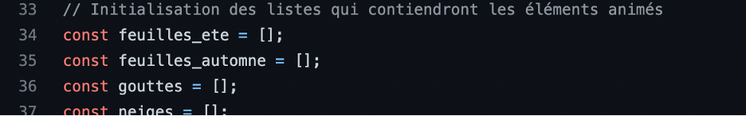
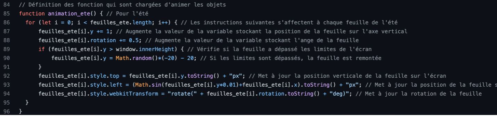

Mini-projet 2 :
Fait par Manndon, Mehmet et LEO
Le cahier des charges:
Le projet consiste à créer un calendrier, en HTML, CSS et JavaScript, qui permet aux utilisateurs de visualiser les jours et les années.
Fonctionnalités :
Le calendrier doit être capable de réaliser les fonctionnalités suivantes :
- Afficher les jours et les mois
- Basculer entre vision mensuelle et vision annuelle
- Ajouter des événements à une date spécifique
- Modifier un événement existant
- Afficher les événements d'une journée
- Changer l'arrière-plan en fonction de la saison
- Intégrer des animations en arrière-plan
- Importer/Exporter des fichiers pour sauvegarder les évènements
Le cahier des charges fonctionnels:
| Fonction | Entrée(s) | Description |
|---|---|---|
| Interface boutons, pour changer mois/an | ||
| initBoutons | Aucun | Cette fonction définit les instructions à exécuter lorsqu’on clique sur les boutons, soit changer le mois affiché si on est en vision mensuelle, ou changer l’an affiché si on est en vision annuelle. |
| Chargement du Calendrier – Vision mensuelle | ||
| load | Aucun | Met à jour le nom du mois et de l’an. Crée un nouveau div pour chaque jour du mois. Lorsqu’un de ces divs est cliqué, modifie la variable selection, et fait afficher une interface de création d’évènement. Changement de l’animation et de l’arrière-plan (avec la fonction change_arriere_plan, et les fonctions d’animations). Affichage des évènements sur le calendrier. Lorsqu’un évènement est cliqué, afficher l’interface de création d’évènement, pour le modifier, et modifie la variable sélection. Cette fonction emploie la fonction remplir, afin d’avoir un format standard pour les dates. |
| change_arriere_plan | Chaîne de caractère contenant le trajet vers une image | Modifie l’image de l’arrière-plan. |
| remplir | Un nombre | Transforme le nombre en chaîne de caractère, puis ajoute un zéro antécédent si la longueur de la chaîne est 1. |
| Animations | ||
| creer_elements_animes | Aucun | Remplit les listes de div qui seront animés. |
| animation_ete | Aucun | Déplace chaque div dans la liste feuilles_ete. Fait descendre chaque div par quelques pixels, et les fait tourner de quelques degrés. |
| animation_automne | Aucun | Déplace chaque div dans la liste feuilles_automne. Fait descendre chaque div de quelques pixels, et les fait tourner de quelques degrés. |
| animation_printemps | Aucun | Déplace chaque div dans la liste gouttes. Fait descendre chaque div de plusieurs pixels. |
| animation_hiver | Aucun | Déplace chaque div dans la liste neiges. Fait descendre chaque div de quelques pixels. |
| Chargement du Calendrier – Vision annuelle | ||
| dezoom | Aucun | Fonction exécutée lorsqu’on clique sur le bouton pour entrer en vision annuelle. Fait disparaître les éléments de la vision mensuelle, et fait apparaître ceux de la vision annuelle. Modifie le booléen en_zoom. |
| mois_cliquer | Aucun | Fonction exécutée lorsqu'on clique sur un mois dans la vision annuelle. Fait apparaître les éléments de la vision mensuelle, et fait disparaître ceux de la vision annuelle. Modifie le booléen en_zoom. Modifie la variable nav pour charger la date correcte en vision mensuelle. |
| Interface de création d’évènement | ||
| creer_evenement | Aucun | Fonction exécutée lorsqu'on clique sur le bouton « Sauvegarder ». Selon la variable selection, créer un nouvel évènement ou modifie un évènement existant, en obtenant les valeurs dans les saisies. Remet à défaut les champs de saisie. Cache l’interface de création d’évènement. |
| annuler | Aucun | Fonction exécutée lorsqu'on clique sur le bouton « Annuler ». Remet à défaut les champs de saisie. Cache l’interface de création d’évènement. |
| Interface d’importation/exportation de fichier | ||
| changer | Aucun | Fonction exécutée lorsqu'on clique sur le bouton pour importer un fichier contenant les données d’évènement. Fait disparaître les boutons importer/exporter, et fait apparaître un élément HTML pour recevoir un fichier. |
| exporter | Aucun | Fonction exécutée lorsqu'on clique sur le bouton pour exporter les évènements dans un fichier. Selon le format CSV, écrit les données des évènements, contenus dans la liste evenement, puis le fait télécharger pour l'utilisateur. |
| importer | Aucun | Fonction exécutée lorsqu'un fichier est mis pour être importé. Lit le fichier, puis met à jour la liste evenement. Fait apparaitre les boutons pour importer/exporter. |
Répartition du travail:
Léo: Conception du calendrier de base et le CSS.
Manndon: Création du système d'évènement, avec le systeme d'importation et d'exportation.
Mehmet: Intégration du système d'animation.
Progression du projet:
Au cours de la première semaine, Léo a expérimenté différentes façons de créer le calendrier. Durant le weekend de la deuxième semaine, il a finalisé le calendrier en ajoutant la fonction load(). La troisième semaine a été la plus productive, avec Manndon qui s'est occupé du système d'événements, Mehmet qui a créé des animations, et Léo qui a majoritairement travaillé sur le CSS. Enfin, durant la quatrième semaine, le projet a été perfectionné avec l'invention par Manndon de la vue annuelle et la création par Léo d'une animation fluide pour l'ouverture des fenêtres.
La presentation :
Le calendrier de base
Ce projet consiste d’un calendrier avec un système d’évènements, une vision par mois et une vision par année. Il consiste aussi d’animations et des fonts d’écrans unique à chaque saison de l’année. Pour la partie présentation, Léo va vous expliquer la base du calendrier, je vais vous expliquer le système d’animations, et finalement Manndon va vous expliquer le système d’évènements.En premier lieu, la fonction load() est le cœur du programme et permet d’afficher le calendrier ainsi que faire fonctionner les boutons, les évènements et les animations.
Création des "boites" du calendrier et calcul des « jours_blancs » ou des jours du mois précédents ainsi que l’ajout des styles des 3 types de boites.
L'initialisation des boutons
Le système des animations
Premièrement, il faut créer des listes pour tous les éléments animés  Choisir une concentration pour chaque élément Pour chaque saison, placer aléatoirement des éléments sur l’axe verticale et calculer pour avoir un dispersement égal sur l’axe horizontale, puis les ajouter dans la liste Faire tourner (rotation) et bouger les feuilles une seule fois avec feuilles_ete, puis le rendre continuel avec SetInterval pour créer une animation ; téléporter les éléments à l’intérieur de l’écran s’ils sortent  Afficher les bons arrières plans Afficher les bons arrières plans et animations pour les bonnes saisons
Le système des évènements

Tout d’abord, au début du programme, on initialise 2 variables :
- Une liste, pour stocker tous les évènements
- Une variable qu’on appelle « selection » pour stocker soit un nombre, qui représente l’index d’un évènement cliqué dans la liste « evenements », ou une chaîne de caractère, qui correspond à la date d’un jour cliqué.
 Par la suite, dans la fonction load(), on définit pour chaque jour les instructions à exécuter lorsqu’on clique dessus avec « carreJour.addEventListener ». Ainsi, lorsqu’un jour est cliqué, on affecte à une variable globale nommé « selection » la date du jour du carré cliqué, puis on fait apparaître l’interface de la création d’un évènement en le glissant vers la droite avec « document.getElementById(‘’creation_evenement’’).style.transform = ‘’translateX(-160.5px)’’ ; ».
Par la suite, dans la fonction load(), on définit pour chaque jour les instructions à exécuter lorsqu’on clique dessus avec « carreJour.addEventListener ». Ainsi, lorsqu’un jour est cliqué, on affecte à une variable globale nommé « selection » la date du jour du carré cliqué, puis on fait apparaître l’interface de la création d’un évènement en le glissant vers la droite avec « document.getElementById(‘’creation_evenement’’).style.transform = ‘’translateX(-160.5px)’’ ; ».
On définit également les instructions à exécuter lorsqu’on clique sur un évènement pour le modifier :
 Cette fois, on fait de même glisser l’interface de création d’évènement, mais cette fois on stocke dans la variable « selection » l’index de l’évènement cliqué dans la liste des évènements, puis on remplit les espaces de saisies avec les données de l’évènements.
Voici l’interface graphique qui apparait, avec les différentes saisies acceptées :
Cette fois, on fait de même glisser l’interface de création d’évènement, mais cette fois on stocke dans la variable « selection » l’index de l’évènement cliqué dans la liste des évènements, puis on remplit les espaces de saisies avec les données de l’évènements.
Voici l’interface graphique qui apparait, avec les différentes saisies acceptées :
 Lorsqu’on clique sur le bouton « Sauvegarder », la fonction « creer_evenement() » est exécutée :
Lorsqu’on clique sur le bouton « Sauvegarder », la fonction « creer_evenement() » est exécutée :

Si on modifie un évènement, alors la variable selection est un nombre, et on met a jour chaque élément de l’évènement sauf la date. Si on crée un évènement, on initier une nouvelle liste qui contient les détails de l’évènement, puis on l’ajoute à la liste contenant tous les évènements. On va ensuite dans tous les effacer le texte écrit dans les saisies pour la prochaine fois, et on recache l’interface de création d’évènement. Enfin, on appelle la fonction load pour faire apparaître ce nouveau évènement. Nous avons également le bouton qui appelle la fonction annuler, qui efface le contenu dans les saisies, et cache l’interface de création d’évènement.
 Par la suite, pour le système d’importation et d’exportation de fichier, on a créé 2 boutons, qui exécutent respectivement les fonctions importer() et exporter().
Par la suite, pour le système d’importation et d’exportation de fichier, on a créé 2 boutons, qui exécutent respectivement les fonctions importer() et exporter().
 La fonction exporter permet à l’utilisateur de télécharger un fichier contenant les données de ses évènements.
À l’aide de 2 loop for, on traverse tous les détails de chaque évènement, puis on les écrit sous la forme d’une chaîne de caractères suivant le format CSV.
On crée ensuite un élément HTML « a » temporaire pour faire télécharger le fichier.
La fonction exporter permet à l’utilisateur de télécharger un fichier contenant les données de ses évènements.
À l’aide de 2 loop for, on traverse tous les détails de chaque évènement, puis on les écrit sous la forme d’une chaîne de caractères suivant le format CSV.
On crée ensuite un élément HTML « a » temporaire pour faire télécharger le fichier.
 La fonction importer() est exécutée lorsqu’un fichier est mis à disposition par l’utilisateur,
Cette fonction lit le fichier grâce à l’objet javascript FileReader(), puis va convertir les données textuelles en liste pour ensuite charger tous les évènements.
La fonction importer() est exécutée lorsqu’un fichier est mis à disposition par l’utilisateur,
Cette fonction lit le fichier grâce à l’objet javascript FileReader(), puis va convertir les données textuelles en liste pour ensuite charger tous les évènements.